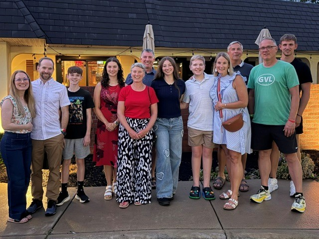
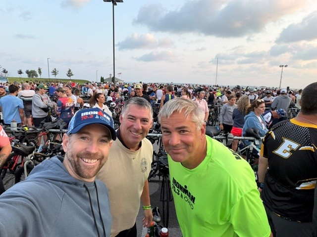
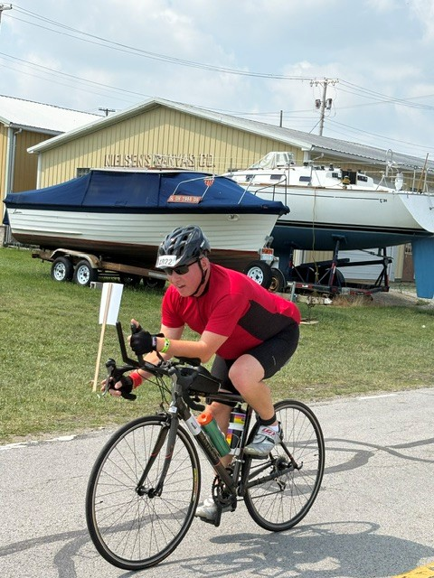
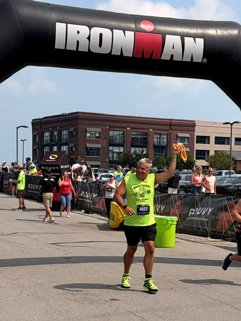
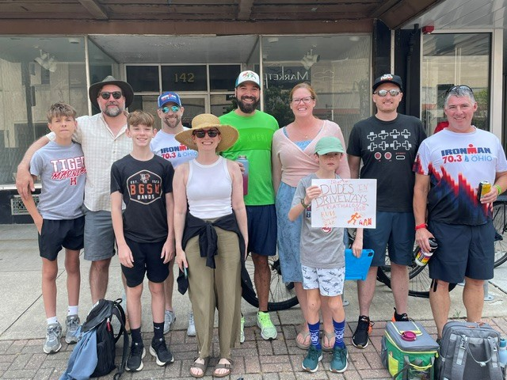
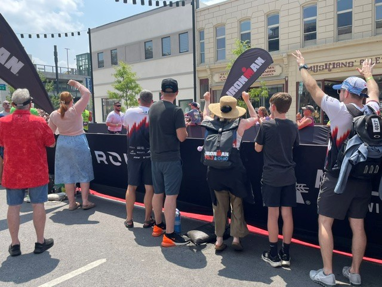
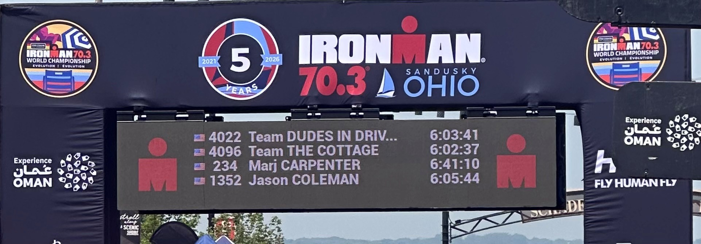

July 18–19, 2026 • Sandusky, Ohio







Sometimes the best adventures are the ones that do not go according to plan.
Our Ironman weekend was originally supposed to begin with the Mallrats concert at Jackson Street Pier. When the concert was cancelled, the Dudes adjusted the plan and gathered with our families for dinner at Marconi’s in Huron on Saturday night instead.
Race morning brought another unexpected change. Weather and Lake Erie conditions forced officials to cancel the swim portion of Ironman 70.3 Ohio. Greg had trained for months to complete the 1.2-mile swim, but the relay would now begin with Jonathan on the bike course.
Jonathan completed the bike leg before handing the race over to Jim for the run. Friends and family filled downtown Sandusky, followed the team throughout the day, and cheered as Team Dudes in Driveways reached the Ironman finish line.
It was not the race weekend we expected, but it was still an incredible experience filled with family, friends, teamwork, cheering, and plenty of great memories.
The weekend ended with an after-race cookout, good food, cold drinks, and a celebration of everything the team accomplished throughout training and race day.
🍝 Family dinner at Marconi’s in Huron
🏊 Months of swim training and preparation
🚴 Jonathan completing the bike leg
🏃 Jim completing the run leg
📣 Friends and family cheering throughout Sandusky
🏅 Team Dudes in Driveways reaching the Ironman finish line
🍔 An after-race cookout and celebration
The swim may have been cancelled, but the adventure certainly was not.